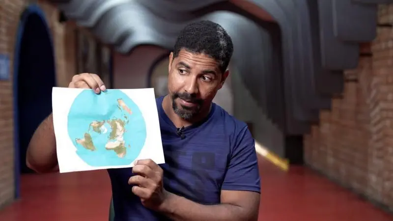

Cómo un viaje a Noruega me hizo ver que estaba equivocado y que la Tierra no es plana

La princesa Kate pide disculpas por la "confusión" que causó su foto retirada por las agencias de noticias por inconsistencias

“Me arrepiento de haber publicado en línea que yo era Madeleine McCann”
Las afirmaciones falsas y engañosas amplificadas por Elon Musk en Twitter